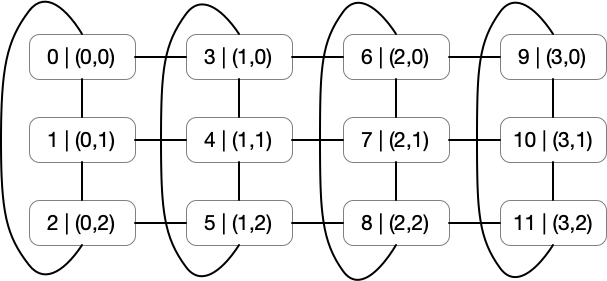
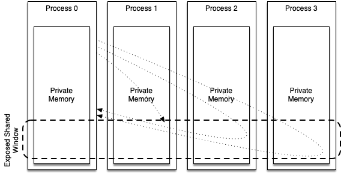
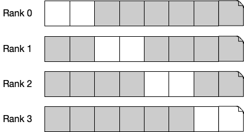

7. Advanced Internode Parallelism
Overview
This week, we’re going to build on the last unit and look at some of the more complex functionality in the MPI standard.
Specifically, we’ll look at:
- Advanced MPI communicators
- Non-blocking communications
- One-sided communications
- Non-contiguous I/O
- Scientific data libraries
Advanced MPI Communicators
In the previous unit, we covered the basic structure of MPI communications, through a communication channel referred to in the standard as a communicator. For most of the applications we’ll encounter, MPI_COMM_WORLD (i.e. using all available MPI processes) will likely be sufficient. However, MPI can create custom communicators based on a problem’s topology.
Virtual Topologies
When decomposing a problem across parallel processes, it is perhaps trivial to implement a 1-dimensional decomposition (where each process’s neighbours hold the ranks immediately before and after).
For more complex decompositions, setting up a grid of processes and calculating which ranks have to exchange halo data is non-trivial. For this reason, MPI provides functionality to set up virtual topologies.
Let’s say, for example, that we have 12 processes and we want them to form a 3 × 4 grid which is periodic in the second dimension but not in the first.

Figure 1: A two-dimensional cartesian topology. 12 processes form a 3 × 4 grid, periodic in the second dimension but not the first.
We can set this up using the MPI_Cart_create() function, which takes as inputs an existing communicator, the number of dimensions, the dimensions themselves, and the periodicity in each dimension, and outputs a new communicator. For the situation in Figure 1, we can use:
MPI_Comm my_comm;
int dims[2] = { 4, 3 };
int periods[2] = { 0, 1 };
MPI_Cart_create(MPI_COMM_WORLD, 2, dims, periods, 0, &my_comm);
This will create a new communicator (named my_comm), that we can use to find our neighbours on a cartesian grid. Each rank can find their own coordinates with MPI_Cart_coords(), and can find the rank of any other process from their coordinates with the MPI_Cart_rank() function.
So for example:
// to find your own coordinates
int my_coords[2];
MPI_Cart_coords(my_comm, my_rank, 2, my_coord);
// to find the rank of a neighbour at position (x, y-1)
int neighbour_coords[2] = { my_coord[0], my_coord[1]-1 };
int neighbour_rank;
MPI_Cart_rank(my_comm, neighbour_coords, &neighbour_rank);
Putting this all together (in another “Hello, World!” application):
#include <stdio.h>
#include <mpi.h>
int main(int argc, char *argv[]) {
int rank, size;
MPI_Init(&argc, &argv);
MPI_Comm_size(MPI_COMM_WORLD, &size);
MPI_Comm_rank(MPI_COMM_WORLD, &rank);
MPI_Comm my_comm;
int dims[2] = {4, 3};
int periods[2] = {0, 1};
MPI_Cart_create(MPI_COMM_WORLD, 2, dims, periods, 0, &my_comm);
int my_coords[2];
MPI_Cart_coords(my_comm, rank, 2, my_coords);
int neighbour_coords[2] = {my_coords[0], my_coords[1]-1};
int neighbour_rank;
MPI_Cart_rank(my_comm, neighbour_coords, &neighbour_rank);
printf("Hello, World! I am process %d/%d. On the cart grid I'm (%d, %d) and the process above me is rank %d\n",
rank, size, my_coords[0], my_coords[1], neighbour_rank);
MPI_Finalize();
return 0;
}
The result is exactly as expected from Figure 1:
$ mpirun -n 12 ./hello
Hello, World! I am process 0/12. On the cart grid I'm (0, 0) and the process above me is rank 2
Hello, World! I am process 1/12. On the cart grid I'm (0, 1) and the process above me is rank 0
Hello, World! I am process 2/12. On the cart grid I'm (0, 2) and the process above me is rank 1
Hello, World! I am process 3/12. On the cart grid I'm (1, 0) and the process above me is rank 5
Hello, World! I am process 4/12. On the cart grid I'm (1, 1) and the process above me is rank 3
Hello, World! I am process 5/12. On the cart grid I'm (1, 2) and the process above me is rank 4
Hello, World! I am process 6/12. On the cart grid I'm (2, 0) and the process above me is rank 8
Hello, World! I am process 7/12. On the cart grid I'm (2, 1) and the process above me is rank 6
Hello, World! I am process 8/12. On the cart grid I'm (2, 2) and the process above me is rank 7
Hello, World! I am process 9/12. On the cart grid I'm (3, 0) and the process above me is rank 11
Hello, World! I am process 10/12. On the cart grid I'm (3, 1) and the process above me is rank 9
Hello, World! I am process 11/12. On the cart grid I'm (3, 2) and the process above me is rank 10
Note that requesting the rank of a process with coordinates outside of the grid will result in an error if a periodic boundary is not specified. If the boundary is periodic, the coordinates will be shifted back onto the grid automatically.
We can simplify finding our neighbours with the MPI_Cart_shift() function, which handles the calculation for us. MPI_Cart_shift() takes as inputs a Cartesian communicator, a direction of shift, and a displacement, and returns the source and destination ranks in this dimension. For example, say we have the same topology as above and we’d like to find the processors to the east and west of each process.
#include <stdio.h>
#include <mpi.h>
int main(int argc, char *argv[]) {
int rank, size;
MPI_Init(&argc, &argv);
MPI_Comm_size(MPI_COMM_WORLD, &size);
MPI_Comm_rank(MPI_COMM_WORLD, &rank);
MPI_Comm my_comm;
int dims[2] = {4, 3};
int periods[2] = {0, 1};
MPI_Cart_create(MPI_COMM_WORLD, 2, dims, periods, 0, &my_comm);
int my_coords[2];
MPI_Cart_coords(my_comm, rank, 2, my_coords);
int east_rank;
int west_rank;
MPI_Cart_shift(my_comm, 0, 1, &west_rank, &east_rank);
printf("Hello, World! I am process %d. On the cart grid I'm (%d, %d). The process to the east of me is %d, and to the west is %d\n",
rank, my_coords[0], my_coords[1], east_rank, west_rank);
MPI_Finalize();
return 0;
}
Our application is now able to calculate the neighours on either side (in the x-dimension) in a single function call (and the call handles non-periodic boundaries).
The output will look like this:
$ mpirun -n 12 ./hello
Hello, World! I am process 10. On the cart grid I'm (3, 1). The process to the east of me is -2, and to the west is 7
Hello, World! I am process 11. On the cart grid I'm (3, 2). The process to the east of me is -2, and to the west is 8
Hello, World! I am process 0. On the cart grid I'm (0, 0). The process to the east of me is 3, and to the west is -2
Hello, World! I am process 1. On the cart grid I'm (0, 1). The process to the east of me is 4, and to the west is -2
Hello, World! I am process 2. On the cart grid I'm (0, 2). The process to the east of me is 5, and to the west is -2
Hello, World! I am process 3. On the cart grid I'm (1, 0). The process to the east of me is 6, and to the west is 0
Hello, World! I am process 4. On the cart grid I'm (1, 1). The process to the east of me is 7, and to the west is 1
Hello, World! I am process 5. On the cart grid I'm (1, 2). The process to the east of me is 8, and to the west is 2
Hello, World! I am process 6. On the cart grid I'm (2, 0). The process to the east of me is 9, and to the west is 3
Hello, World! I am process 7. On the cart grid I'm (2, 1). The process to the east of me is 10, and to the west is 4
Hello, World! I am process 8. On the cart grid I'm (2, 2). The process to the east of me is 11, and to the west is 5
Hello, World! I am process 9. On the cart grid I'm (3, 0). The process to the east of me is -2, and to the west is 6
You might notice that for the processes on the west-most line of processes, the process to the west is -2. For the processes on the east-most line of processes, the process to the east is -2. This is actually a special value that is defined as MPI_PROC_NULL. Since these boundaries are not periodic, this special value indicates that there is no process to the west and east of these processes, respectively.
One final thing we’ll briefly touch upon before moving on is the issue of calculating a balanced and optimal Cartesian grid decomposition. This may be a difficult task, but luckily, we can offload this to the MPI_Dims_create() function. For example, if we have our 12 processes as before, but we’re unsure of the best decomposition in 2 dimensions, we can use:
int dims[2] = { 0, 0 }; // Dim_create will only change dimensions who's value is 0.
MPI_Dims_create(size, 2, dims); // will update dims to {4, 3}
Non-blocking Communications
In the previous unit, we covered some of the basic point-to-point and collective communication functions in MPI. In the unit, it was noted that each of the functions were blocking communications, and therefore any calls to these functions would cause the application to block until the message send or receive has been completed. If not carefully considered, these blocking communications may create unnecessary synchronisation points that harm performance, or in the worst case create the possibility that an application might deadlock.
The use of non-blocking communications is one solution to these potential issues.
For most communication functions in MPI, there is a non-blocking alternative, where the MPI library initiates a communication, but control is immediately passed back to the application. It is then the application’s responsibility to ensure the buffers being used for communication are not used until the communication is complete. This allows us an opportunity to overlap compute and communication. In the halo exchange example in the previous unit, we could update values in each array, provided we do not update or use values in the leftmost or rightmost columns (until the communications are complete).
The call signatures for a non-blocking send function and a non-blocking receive function are similar to before but contain an additional parameter – an MPI_Request pointer.
int MPI_Isend(const void *buf, int count, MPI_Datatype datatype, int dest, int tag, MPI_Comm comm, MPI_Request *request);
int MPI_Irecv(void *buf, int count, MPI_Datatype datatype, int source, int tag, MPI_Comm comm, MPI_Request *request);
After initiating a non-blocking send or receive, we can query the request object to check on the progress of our communication (with MPI_Wait() or MPI_Waitall()).
We could rewrite the send-receive functions in the previous unit using non-blocking send and receive functions like so:
MPI_Request requests[4];
// exchange column 1 with ghost column 11
// and exchange column 10 with ghost column 0
MPI_Isend(&my_matrix[0][1], 1, my_column, left, 0, MPI_COMM_WORLD, &requests[0]);
MPI_Isend(&my_matrix[0][10], 1, my_column, left, 1, MPI_COMM_WORLD, &requests[1]);
MPI_Irecv(&my_matrix[0][11], 1, my_column, right, 0, MPI_COMM_WORLD, &requests[2]);
MPI_Irecv(&my_matrix[0][0], 1, my_column, right, 1, MPI_COMM_WORLD, &requests[3]);
// do useful work while waiting for the non-blocking send and receives
MPI_Waitall(4, requests, MPI_STATUSES_IGNORE);
Note that the send calls have been given different tags, and that the request objects are being stored in an array (so that we can check all 4 requests with a single MPI_Waitall()). You should also note blocking and non-blocking communications can be mixed, i.e., you could issue a non-blocking send followed by a blocking receive.
For most communication functions, there is a non-blocking alternative, usually prefixed with the letter I (e.g., MPI_Barrier() and MPI_Ibarrier(), etc.).
Exercise
Write a simple MPI program to swap two arrays. Try implementing it with blocking send and receive operations, combined send/receive operations and non-blocking send and receive operations. Can you make any of them deadlock?
One-sided Communications
At this point, all of the communications we’ve encountered in the MPI library have required active participation by senders and receivers. In point-to-point communications, both a sender and a receiver must be active in the communication; in a collective communication, all participating ranks must call a collective operation together.
In some cases, this adds unnecessary synchronisation overhead that may harm performance, and may not be the most natural approach to a distributed problem. In version 3.1 of the MPI standard, one-sided operations were introduced, where data movement is decoupled from process synchronisation.
One-sided communications in MPI are based on the idea of an exposed window into a process’s memory. Other processes can directly read from and write to this memory without requiring active participation. In some respects, this has the effect of making a distributed-memory application operate similarly to a shared-memory application.

Figure 2: Using a defined window for one-sided communication, P0 puts data into P1’s memory and retrieves data from P2 and P3’s memory.
In Figure 2, we see that each process has its own private local memory space, and in this memory space, a region has been defined as an exposed window for one-sided remote memory access (RMA) communication. In the figure, process 0 puts data into process 1’s exposed memory space, and gets data from process 2 and process 3.
In the remainder of this section, we’ll look at how we can implement one-sided communications in a simple MPI application. Specifically, we’ll cover:
- How to create a remotely accessible memory window in MPI.
- How to read, write, and update remote memory.
- How to synchronise our one-sided application.
Create an MPI Window
Of course, in any ordinary application memory is local by default (i.e. a malloc is local to a process). In MPI, we can then declare this memory as being remotely accessible. MPI calls these regions “windows”.
A group of processes create a “window object”, whereby all cooperating processors can access that window. There are 4 ways to create an MPI window – MPI_Win_create, MPI_Win_allocate, MPI_Win_create_dynamic and MPI_Win_allocate_shared. For now, we’ll only consider the first of these.
int MPI_Win_create(void *base, MPI_Aint size, int disp_unit, MPI_Info info, MPI_Comm comm, MPI_Win *win);
int MPI_Win_free(MPI_Win *win);
Given a pointer to allocated memory, MPI_Win_create() creates a window into this memory (referenced as an MPI_Win variable). The call should be made by all ranks within the communicator. The window will be size bytes wide, where each unit is of size disp_unit. The MPI_Info parameter can provide hints for the underlying implementation, but in our example we’ll use the special MPI_INFO_NULL macro.
The other functions listed above operate similarly but may allocate the memory at the same time (and therefore remove the need to have memory already allocated), or defer the allocation of memory to a later stage (in the case of MPI_Win_create_dynamic()).
When the RMA window is no longer required, it should be freed with the MPI_Win_free() function call.
Read and Write to an MPI Window
Reading and writing to an MPI window is typically achieved through get and put operations, creatively named MPI_Get and MPI_Put.
int MPI_Get(void *origin_addr, int origin_count, MPI_Datatype origin_datatype, int target_rank,
MPI_Aint target_disp, int target_count, MPI_Datatype target_datatype, MPI_Win win);
int MPI_Put(const void *origin_addr, int origin_count, MPI_Datatype origin_datatype, int target_rank,
MPI_Aint target_disp, int target_count, MPI_Datatype target_datatype, MPI_Win win);
In the case of MPI_Get, the getter specifies where data will be stored (origin_addr), how many items (origin_count) and of what type (origin_datatype) it would like, where it will get them from (target_rank), the offset into the window (target_disp), and the number and type of the items (target_count and target_datatype), and the window it is retrieving the data from (win). MPI_Put operates almost identically but is initiated by the other process.
Besides the basic get and put methods, there are a number of alternatives with additional functionality that will not be covered here. Examples include MPI_Accumulate and MPI_Fetch_and_op, which can additionally use an MPI_Op to perform a reduction on data, and MPI_Compare_and_swap, which can swap values in RMA windows based on a comparison.
Synchronising One-sided Communications
Before we look at a complete example using RMA calls, we need to think about how processes synchronise when using one-sided communications. Because getters and setters are asynchronous, the order of operations could lead to non-deterministic behaviour.
To alleviate these issues, one-sided MPI uses a “fence” to synchronise RMA calls. A call to MPI_Win_fence does not block in the same way that an MPI_Barrier does, but it does enforce that the source and target of future RMA operations have reached their respective fence assertions.
int MPI_Win_fence(int assert, MPI_Win win);
A single call to an MPI_Win_fence function synchronises all RMA calls within the window. Moreover, a call to MPI_Win_fence completes an RMA access “epoch” if it was preceded by another fence call. A typical usage pattern might therefore be to call the MPI_Win_fence function before a series of getters and setters, and then to call MPI_Win_fence afterward to ensure synchronisation.
A complete example might look like this, with rank 0 getting an array from rank 1’s window buffer, without requiring send and receive commands on both sides.
#include <stdio.h>
#include <stdlib.h>
#include <mpi.h>
int main(int argc, char *argv[]) {
MPI_Init(&argc, &argv);
int rank;
int size;
MPI_Comm_rank(MPI_COMM_WORLD, &rank);
MPI_Comm_size(MPI_COMM_WORLD, &size);
int window_buffer[4] = {0, 0, 0, 0};
if (rank == 1) {
window_buffer[0] = 32;
window_buffer[1] = 65;
window_buffer[2] = 76;
window_buffer[3] = 12;
}
// create a window for one-sided communication
MPI_Win my_window;
MPI_Win_create(&window_buffer, 4 * sizeof(int), sizeof(int), MPI_INFO_NULL, MPI_COMM_WORLD, &my_window);
MPI_Win_fence(0, my_window); // start an access "epoch"
// rank 0 gets 4 integers from rank 1
if (rank == 0) {
MPI_Get(&window_buffer, 4, MPI_INT, 1, 0, 4, MPI_INT, my_window);
}
MPI_Win_fence(0, my_window); // end an access "epoch"
if (rank == 0) {
for (int i = 0; i < 4; i++) {
printf("%d\t", window_buffer[i]);
}
printf("\n");
}
MPI_Win_free(&my_window);
MPI_Finalize();
}
With one-sided communications, we can do this the other way too using put operations. The code is essentially identical, except now rank 1 uses MPI_Put to place the numbers in rank 0’s shared window, rather than rank 0 having to get these values.
Exercise
Try the example above and then try rewriting it to use an
MPI_Putfrom rank 1 instead.
As you can see, MPI provides a simple and potentially powerful model for one-sided communication. However, this model of communication is still rarely found in HPC applications. While the model reduces complexity for a user, it increases complexity for the MPI library implementation, and so many implementations do not exhibit high performance.
Further Reading
- Lecture 34: One-sided Communication in MPI by William Gropp, Illinois
Advanced Parallel I/O
In the last unit, we looked at basic parallel I/O in MPI. The functionality we covered allows us to read and write basic files using local or shared file pointers in parallel.
The MPI-IO API has many more advanced features that can be useful in large parallel applications. In the remainder of this unit, we’ll look at one more complex feature of the MPI-IO API – file views. We’ll then cover some alternative approaches to I/O in a parallel application.
Non-Contiguous File I/O
The API calls we’ve looked at so far allow us to read and write files, but offer little data protection to prevent other ranks from reading and writing the wrong data. To solve this potential issue, MPI offers the ability to set a rank’s view of a file. This allows us to write non-contiguous blocks to a shared file without having to manually calculate file offsets, etc.
In order to operate safely in a non-contiguous manner, MPI uses the notion of a file view. A file view allows each process to specify (on a block-by-block basis) where its data lives in the file, using “holes” to represent other process’s data.

Figure 3: An example of a file view on 4 processes
We can specify an MPI file view using the MPI_File_set_view() function, which requires a displacement, an element type (etype), a file type, the data representation, and an info object.
int MPI_File_set_view(MPI_File fh, MPI_Offset disp, MPI_Datatype etype, MPI_Datatype filetype, const char *datarep, MPI_Info info);
The file type is typically a custom type that is set up to contain elements of the etype, with gaps. So, assuming each block in Figure 3 is an MPI_CHAR, we could set up a file view like so:
MPI_Datatype filetype;
// our file view is 2 chars, followed by 6 gaps (for 4 processes)
MPI_Type_vector(8, 2, 8, MPI_CHAR, &filetype);
MPI_Type_commit(&filetype);
// we set each processes file view to be the same but offset according to rank
MPI_File_set_view(my_file, rank * 2, MPI_CHAR, filetype, "native", MPI_INFO_NULL);
With this file view set, we can use the MPI_File_read() and MPI_File_write() functions without worrying about corrupting the other processes data; each read and write (regardless of size) will be spread according to the file view.
MPI-IO is complex; and as with most things in C and MPI, there are many ways of achieving the same result. Certainly, the best way to fully understand MPI-IO is through trial and error.
Further Reading
Other Approaches
While MPI-IO is perhaps the dominant library for performing parallel I/O on HPC systems, nowadays it is relatively rare for developers to interact with MPI-IO directly. Instead, middleware libraries are typically used that sit on top of MPI-IO. These middleware libraries carry a number of advantages over MPI-IO for scientific software. Firstly, they allow optimisations at a single point, benefitting potentially many applications. Secondly, they usually enforce a common structure on scientific data or provide useful additional functionality.
We won’t delve too far into these libraries, but some notable examples are:
HDF5 – Hierarchical Data Format
HDF5 is a data format that is specifically designed for storing scientific data. An HDF5 file can contain two types of objects, Datasets and Groups. Datasets are typically multidimensional arrays of an homogeneous type, while groups are container structures that can hold other groups and datasets. Effectively, data in an HDF5 file is stored in a structure not unlike a file system (e.g. /path/to/dataset).
The HDF5 library can be compiled with or without MPI (meaning that it can easily be used on both parallel and non-parallel systems). It is also a file format that is supported by many visualisation and data analysis tools.
For example, to write out a simple 2D integer array into a dataset:
#include <hdf5.h>
#define FILENAME "test.h5"
#define DATASETNAME "IntArray"
#define NX 5 /* dataset dimensions */
#define NY 6
#define DIMS 2
int main(int argc, char *argv[]) {
hid_t file, dataset; /* file and dataset handles */
hid_t datatype, dataspace; /* handles */
hsize_t dimsf[DIMS]; /* dataset dimensions */
herr_t status;
int data[NX][NY]; /* data to write */
int i, j;
/*
* Data and output buffer initialization.
*/
for (j = 0; j < NX; j++)
for (i = 0; i < NY; i++)
data[j][i] = i + j;
/*
* 0 1 2 3 4 5
* 1 2 3 4 5 6
* 2 3 4 5 6 7
* 3 4 5 6 7 8
* 4 5 6 7 8 9
*/
/*
* Create a new file using H5F_ACC_TRUNC access,
* default file creation properties, and default file
* access properties.
*/
file = H5Fcreate(FILENAME, H5F_ACC_TRUNC, H5P_DEFAULT, H5P_DEFAULT);
/*
* Describe the size of the array and create the data space for fixed
* size dataset.
*/
dimsf[0] = NX;
dimsf[1] = NY;
dataspace = H5Screate_simple(DIMS, dimsf, NULL);
/*
* Define datatype for the data in the file.
* We will store little endian INT numbers.
*/
datatype = H5Tcopy(H5T_NATIVE_INT);
status = H5Tset_order(datatype, H5T_ORDER_LE);
/*
* Create a new dataset within the file using defined dataspace and
* datatype and default dataset creation properties.
*/
dataset = H5Dcreate1(file, DATASETNAME, datatype, dataspace, H5P_DEFAULT);
/*
* Write the data to the dataset using default transfer properties.
*/
status = H5Dwrite(dataset, H5T_NATIVE_INT, H5S_ALL, H5S_ALL, H5P_DEFAULT, data);
/*
* Close/release resources.
*/
H5Sclose(dataspace);
H5Tclose(datatype);
H5Dclose(dataset);
H5Fclose(file);
return 0;
}
We can load the HDF5 module on Viking and then compile, and run, this simple application like so (and examine the output with h5dump):
$ module load HDF5/1.10.5-gompi-2019a
$ mpicc -o hdf5-example hdf5-example.c -lhdf5
$ ./hdf5-example
$ h5dump test.h5
HDF5 "test.h5" {
GROUP "/" {
DATASET "IntArray" {
DATATYPE H5T_STD_I32LE
DATASPACE SIMPLE { ( 5, 6 ) / ( 5, 6 ) }
DATA {
(0,0): 0, 1, 2, 3, 4, 5,
(1,0): 1, 2, 3, 4, 5, 6,
(2,0): 2, 3, 4, 5, 6, 7,
(3,0): 3, 4, 5, 6, 7, 8,
(4,0): 4, 5, 6, 7, 8, 9
}
}
}
}
Further Reading
NetCDF – Network Common Data Form
NetCDF is a similar data format to HDF5, again specifically designed for storing scientific data. NetCDF is a self-describing data format, in that the header describes the layout of the remainder of the file. File metadata is stored in the form of name/value attributes.
NetCDF grew out of NASA’s Common Data Format and has been developed since 1988. A parallel extension of NetCDF (Parallel-NetCDF, or PnetCDF) was developed by Argonne National Laboratory and again uses MPI-IO for its parallel filesystem backend.
Again, the format is well supported by a range of visualisation and analysis applications.
Further Reading
- NetCDF
- Network Common Data Format, Wikipedia